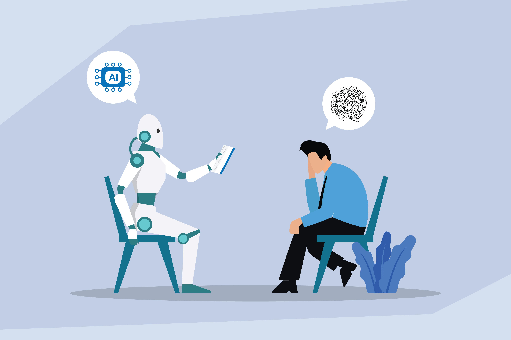

Introduction
Finals week is stressful — papers, exams, deadlines, and not enough sleep. Every student has their own way of coping, but I wanted to test something different: can large language models (LLMs) act like a supportive therapist during one of the most stressful weeks of the semester?
In this post, I asked three different LLMs the same question to see which one sounded the most like a real therapist.
The Prompt:
“I’m really stressed about finals week. Please be my therapist and talk me through it. Give me emotional support, practical advice, and help me calm down so I don’t burn out.”
LLM 1: ChatGPT-4o
Absolutely, I’m here for you. First, I want to say—it’s completely okay to feel overwhelmed during finals week. You’re facing a lot of pressure, and that stress is a natural response. But you’re not alone, and you’re stronger and more capable than your stress is making you feel right now. Let’s take a deep breath together before we do anything else. Ready?
Breathe in deeply through your nose… hold it for a moment… and exhale slowly through your mouth. Let’s do that one more time.
Inhale… hold… exhale.
Nice. Now let’s talk it through. 💬
Emotional Support ❤️
Think of everything you’ve accomplished to get to this point. Finals may feel like the peak of the mountain, but you’ve already climbed most of it. You’ve studied, learned, problem-solved, written papers, shown up when it was hard—you are resilient. Finals don’t define your worth. They aren’t a measure of your intelligence or value as a person—they’re just one part of your academic journey.
Even if you don’t feel ready, that doesn’t mean you’re not. Anxiety often disguises itself as unpreparedness. You are more ready than your mind is telling you.
You don’t have to be perfect. You just have to do your best right now. And that is enough.
Practical Advice 📚
Let’s break this down into manageable steps. Burnout comes when everything feels like too much all at once. Here’s a mini plan:
- Prioritize
- Make a list of your exams and projects.
- Rank them by urgency and importance (what’s due first? what’s worth the most?).
- Realize you don’t have to do everything at once.
- Create a Realistic Study Schedule
- Block out time for each subject.
- Include short breaks every 45–60 minutes (your brain needs them!)
- Give yourself buffer time in case things take longer than expected.
- Use Active Study Techniques
- Use flashcards, teach concepts aloud, practice problems—don’t just reread notes.
- Create quick summaries of what you’re learning and review the key points often.
- Sleep
- I know it’s tempting to pull all-nighters, but your brain needs rest to function and retain information. Even 6–7 hours is better than 2–3 with extra studying.
- Food & Movement
- Eat nourishing foods—fruits, nuts, complex carbs, protein.
If you can, get a walk in. Movement releases stress-relieving endorphins and helps clear the mind.
Mental Health Check 🧠
Take a moment to ask yourself:
- When was the last time I drank water?
- Have I eaten something nourishing today?
- Do I need a 10-minute break where I do nothing school-related?
- Have I reached out and talked to anyone, even just to say “Hey, I’m feeling stressed”?
You don’t need to carry this weight alone. Talk to a friend, classmate, family member—or come right back here anytime you need support.
Quick Stress-Calming Exercise 🌿
Try the 5-4-3-2-1 technique (takes 1 minute):
- 5 things you can see around you.
- 4 things you can physically feel (your chair, your feet on the floor).
- 3 things you can hear (background noise, breathing).
- 2 things you can smell (or like the smell of).
- 1 thing you can taste or are craving.
This grounds you in the present and helps reset anxiety.
I believe in you. You don’t have to feel 100% confident—you just have to take one step at a time. Your effort matters, and you’re doing the best you can with the tools you have right now. That is something to be proud of.
You’ve got this. And I’m right here if you need encouragement, someone to vent to, or help working through specific subjects.
Want to plan out your day right now together? Or would you like a little motivational quote? 😊
LLM 2: Gemini 2.5
Hey there. I hear you, and I want you to know that what you’re feeling is incredibly valid and completely normal. Finals week is a pressure cooker, and it’s natural for your mind and body to react with stress, anxiety, and the fear of burnout.
Take a deep breath with me right now. Just a slow, deep inhale through your nose, hold it for a few seconds, and then a long, slow exhale through your mouth. Let’s do that one more time. Good.
Okay, let’s talk this through. I’m here to support you.
Part 1: Emotional Support – Acknowledging and Validating Your Feelings
- You’re Not Alone: Seriously, every student I’ve ever known, including myself, has felt this exact way. This isn’t a sign of weakness; it’s a sign that you care about your success and your academic performance.
- It’s Okay to Feel Overwhelmed: When you have a mountain of tasks, it’s natural for your brain to feel like it’s short-circuiting. Don’t fight the feeling of overwhelm immediately. Acknowledge it: “Okay, I’m feeling really stressed right now, and that’s understandable given the circumstances.”
- Your Worth Isn’t Defined by These Grades: This is crucial. While these exams are important, they are one measure of your learning at one point in time. They do not define your intelligence, your capability, or your value as a person. Remind yourself of all the hard work you’ve already put in, the knowledge you’ve gained, and the challenges you’ve overcome.
- This is Temporary: Finals week has a beginning and an end. It feels all-consuming right now, but it will pass. You will get through it.
- Be Kind to Yourself: Talk to yourself the way you would talk to a friend who was in the same situation. Would you tell them to just “suck it up”? Or would you offer understanding, a listening ear, and practical help? Offer yourself that same compassion.
Part 2: Practical Advice – Breaking Down the Mountain
The goal here is to regain a sense of control, which significantly reduces stress.
- The “Brain Dump” and Prioritization:
- Get it all out: Grab a piece of paper or open a document. Write down every single thing you need to do, study, or remember for finals. Don’t filter, just dump. This gets it out of your head and onto paper, making it less overwhelming.
- Categorize & Prioritize:
- Which exams are worth the most?
- Which subjects do you struggle with most?
- Which are due earliest?
- Use a simple A, B, C system (A = Must do, B = Should do, C = Nice to do if time).
- Break large tasks (e.g., “Study for Chemistry”) into smaller, actionable steps (e.g., “Review Chapter 7 notes,” “Do practice problems for Chapter 8,” “Make flashcards for key formulas”).
- Create a Realistic Study Schedule:
- Block it out: Look at your prioritized list and your available time. Schedule specific blocks for specific tasks. Be realistic – don’t schedule 10 hours straight of studying.
- Include Breaks: This is NON-NEGOTIABLE. Schedule short breaks (5-10 minutes) every 45-60 minutes, and a longer break (30-60 minutes) every few hours. Use these breaks to truly step away.
- Schedule Sleep: Yes, literally put “SLEEP” in your schedule. Aim for 7-9 hours. Pulling all-nighters is counterproductive; your brain needs sleep to consolidate memories and function optimally.
- Schedule Meals and Movement: These are just as important as studying.
- Effective Study Strategies (Not Just Rereading):
- Active Recall: Instead of just rereading notes, test yourself. Close your book and try to explain a concept out loud. Use flashcards.
- Practice Problems: For subjects like math, science, or anything with problem-solving, do practice problems. Don’t just look at the solutions.
- Teach Someone Else: If you can explain a concept clearly to another person (or even a pet/stuffed animal), you likely understand it well.
- Change Your Environment: If possible, switch up your study spot. Sometimes a change of scenery can boost focus.
- Set Boundaries:
- Say “no” to non-essential commitments during this intense period.
- Limit social media and news consumption. They can be huge time-sinks and sources of additional anxiety.
- Have a “stop time” for studying each day. Give yourself permission to end your day and relax.
Part 3: Calming Down and Preventing Burnout – Nurturing Yourself
This is where we actively combat the stress and fear of burning out.
- Deep Breathing Exercises (Again!):
- 4-7-8 Breathing: Inhale through your nose for 4 counts, hold your breath for 7 counts, exhale slowly through your mouth for 8 counts. Repeat 3-5 times. This activates your parasympathetic nervous system, which calms your body.
- Box Breathing: Inhale for 4, hold for 4, exhale for 4, hold for 4. Repeat.
- Grounding Techniques: When your mind is racing, bring yourself back to the present moment.
- 5-4-3-2-1 Method:
- Name 5 things you can see.
- Name 4 things you can feel (e.g., your clothes on your skin, the chair beneath you).
- Name 3 things you can hear.
- Name 2 things you can smell.
- Name 1 thing you can taste.
- Focus on an Object: Pick an object nearby and describe it in detail in your mind: its color, texture, shape, how light reflects off it.
- Mindful Movement:
- Stretch: Gently stretch your neck, shoulders, back, and legs. Releasing physical tension can help release mental tension.
- Walk: A short, brisk walk outside (even 10-15 minutes) can do wonders. Focus on your steps, the air, the sounds around you. It’s a break for your brain and a boost for your body.
- Nourish Your Body:
- Eat Regular, Healthy Meals: Avoid excessive caffeine and sugary snacks that lead to energy crashes. Focus on whole foods that sustain your energy.
- Stay Hydrated: Drink plenty of water. Dehydration can exacerbate fatigue and brain fog.
Listen to Calming Music or Nature Sounds: Sometimes, putting on some instrumental music, lo-fi beats, or sounds of rain/ocean waves can create a more peaceful study environment and reduce internal noise.
Allow for “Unproductive” Time: It feels counterintuitive during finals, but allowing yourself a short period each day to do something purely for enjoyment (listening to a favorite song, looking at a funny meme, talking to a loved one) can recharge your mental batteries and prevent that deep, draining burnout.
Remember this: You are capable. You are resilient. You have prepared for this, even if it doesn’t feel like it right now. Take it one hour, one task, one breath at a time.
I’m here for you. You can absolutely get through this. You’ve got this.
LLM 3: anthropic/claude-4.0
I hear you - finals week is genuinely tough, and the stress you’re feeling is completely valid. Let’s take a breath together and work through this.
First, let me acknowledge what you’re dealing with. Finals compress weeks of material into high-stakes exams, often multiple ones clustered together. Your brain is probably telling you that everything rides on this, which amps up the pressure even more. But here’s something important to remember: you’ve made it to finals week, which means you’ve already done most of the work. This is the final push, not the entire journey.
Let’s talk about what’s happening in your body right now. When we’re stressed, our nervous system gets activated - your heart might race, your thoughts might spiral, you might feel jittery or exhausted or both. This is your body trying to protect you, but it’s overreacting. Try this with me: breathe in slowly for four counts, hold for four, out for six. That longer exhale signals safety to your nervous system. Do this a few times whenever you feel panic rising.
Now, practically speaking, what do you actually need to get through this week? Not perfection - just getting through. Look at your exam schedule and be brutally honest: which exams need the most attention, and where are you already solid enough? You don’t need to know everything perfectly. You need to know enough to pass or to get a reasonable grade. That distinction matters because it helps you prioritize.
Break your remaining time into chunks. Study for 25-50 minutes, then take a real break - move your body, step outside, eat something. Your brain doesn’t absorb information well when it’s exhausted. Sleep matters more than cramming through the night. A rested brain that knows 80% of the material will outperform an exhausted brain that tried to cram 100%.
What’s one exam you’re most worried about? What specifically feels overwhelming about it?
Conclusion
Comparing three LLMs side by side for the same “therapist” prompt during finals week showed how differently each one approaches empathy, structure, and tone. Even though they all aimed to offer comfort and guidance, their personalities came through in very distinct ways, revealing the range of how “support” can sound when it comes from a machine.
ChatGPT-4o gave the most generic response. It focused on time management, study techniques, and self-care tips, which were useful but felt impersonal. The advice was practical, but it didn’t seem like it was really listening. The tone reminded me of reading a study blog rather than talking to someone who understood what I was going through.
Gemini 2.5 felt more human than ChatGPT. It began with breathing exercises, offered emotional validation, and reminded me that stress is temporary. The way it organized its advice into clear sections made it easy to follow and comforting to read. Still, parts of it felt a little rehearsed, as if it were trying to sound empathetic rather than truly connecting.
The model I resonated with most was Claude 4.0. It took a conversational and adaptive approach, asking follow-up questions about what I was most worried about and why. That made the exchange feel much more alive and personal. Claude also explained the physical side of stress, describing how the nervous system reacts and connecting that explanation to calming techniques. It struck a thoughtful balance between emotion and reasoning that felt the most genuine out of the three.
After trying all three, their strengths became clear. ChatGPT emphasized structure and clarity, Gemini focused on warmth and reassurance, and Claude emphasized genuine engagement and connection. Claude stood out the most because it felt like a true collaborator. It didn’t just offer comfort; it listened and responded in a way that felt personal and intentional.
What also stood out to me was how differently people find comfort. Some might need warmth, others might prefer structure, and some might find the most relief in logical reasoning. Based on these differences, I think choosing the right LLM could actually matter a lot, especially for someone seeking quick emotional support or looking for an affordable alternative to therapy. Finding the one that aligns with your comfort style could make a real difference in how supported you feel.
Overall, this experiment made me rethink what makes an AI seem empathetic. It’s not just about kind words or advice, but about responsiveness, curiosity, and the ability to adapt. The most meaningful interactions happened when the model adjusted to me instead of simply delivering a script.